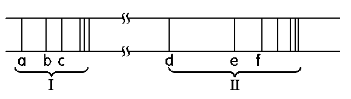

與波耳氫原子模型
光是一種電磁波，在真空中具有固定的傳播速率 $c$。波長 ($\lambda$) 與頻率 ($\nu$) 成反比。
愛因斯坦提出光子理論，光能量是不連續的量子化形式，光子的能量 $E$ 與其頻率成正比。
$h$ 為普朗克常數 ($6.626 \times 10^{-34} \text{ J}\cdot\text{s}$)
能量特性：波長愈短的電磁波 (例如：紫外光、X射線)，其光子能量愈高。
根據光的組成，光譜主要分為兩種形式：
包含各種連續波長的電磁波。
例：太陽光、白熾燈泡發出的白光經過三稜鏡折射後，呈現如彩虹般的連續光帶。
只含有特殊波長 (不連續) 的電磁波。
例：氣體放電管中高溫激發的原子光譜 (如氫原子光譜、霓虹燈)。
兩電磁波的波長分別為 $a\text{ nm}$ 與 $b\text{ nm}$，
則這兩種電磁波的光子能量比為？
將氫氣置於低壓放電管中，通以高電壓放電，可產生紫紅色的光。經過分光儀後，呈現出不連續的線光譜。
1888年，芮得柏提出一個能完美描述所有氫原子光譜譜線波長的經驗公式：
$R_H \approx 1.097 \times 10^7 \text{ m}^{-1}$ (芮得柏常數)
$n_l$ 為低能階主量子數，$n_h$ 為高能階主量子數 ($n_h > n_l$)
已知來曼系列中波長最長的譜線其波長為 $121.5\text{ nm}$，
則巴耳麥系列中波長最短的譜線，其波長為多少？
為了解釋原子穩定性與離散的線光譜，波耳引用了量子化概念，提出三大假設：
經由假設推導，波耳得出氫原子在主量子數 $n$ 的軌道能量為：
特性：
- 基態 (n=1) 能量最低，為 $-13.6 \text{ eV}$。
- 隨著 $n$ 增大，能階愈密集，能量趨近於 $0$ (游離態)。
氫原子光譜中，紫外光區第一條線與第三條線的頻率比為何？
下圖為氫原子光譜的紫外光區及可見光區的譜線，試回答下列問題：

(1) 來曼系列是哪一區？
答：紫外光區。
(來曼系列能量較高，位於紫外光區；巴耳末系列位於可見光區)
(2) 由 $n=4$ 降至 $n=2$ 的譜線？
答：譜線 e。
(此為巴耳末系列第二條，對應 $n=4 \to 2$)
(3) 譜線 $e$ 與 $d$ 的頻率比？
頻率 $\nu \propto \Delta E$
$\nu_e \propto (\frac{1}{2^2} - \frac{1}{4^2}) = \frac{3}{16}$
$\nu_d \propto (\frac{1}{2^2} - \frac{1}{3^2}) = \frac{5}{36}$
答：$\nu_e : \nu_d = \frac{3}{16} : \frac{5}{36} = 27 : 20$
(4) 巴耳末系列第三條譜線？
巴耳末系列落至 $n=2$。
第一條：$3 \to 2$；第二條：$4 \to 2$；第三條：$5 \to 2$
答：$n=5$ 降至 $n=2$
(5) 譜線 $b$ 與 $d$ 的波長比？
波長 $\lambda \propto \frac{1}{\Delta E}$
$b$ 為來曼系列第二條 ($3 \to 1$)：$\Delta E_b \propto (\frac{1}{1^2} - \frac{1}{3^2}) = \frac{8}{9}$
$d$ 為巴耳末系列第一條 ($3 \to 2$)：$\Delta E_d \propto (\frac{1}{2^2} - \frac{1}{3^2}) = \frac{5}{36}$
$\lambda_b : \lambda_d = \Delta E_d : \Delta E_b = \frac{5}{36} : \frac{8}{9}$
答：$\lambda_b : \lambda_d = 5 : 32$